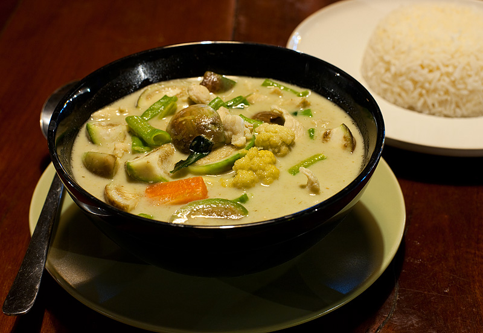

About us

For over 10 years, Ting worked in the kitchen of just about every Thai restaurant in Portland before a friend suggested that she and her husband, Mao, open up their own. That was over 6 years ago, and if asked about it, Mao smiles and says he still loves it, and would rather be at work than at home. He jokingly says that when he is at home, his twin daughters play with each other, leaving him nothing to do.
Opening Hours
- Weekdays
- 11.00 am - 9.00 pm
- Weekends
- 11.00 am - 11.00 pm
Contact Us
16590 SW Union Rd
Hillsboro, OR 97229
Tel: 503-645-9543
Email:group@gmail.com